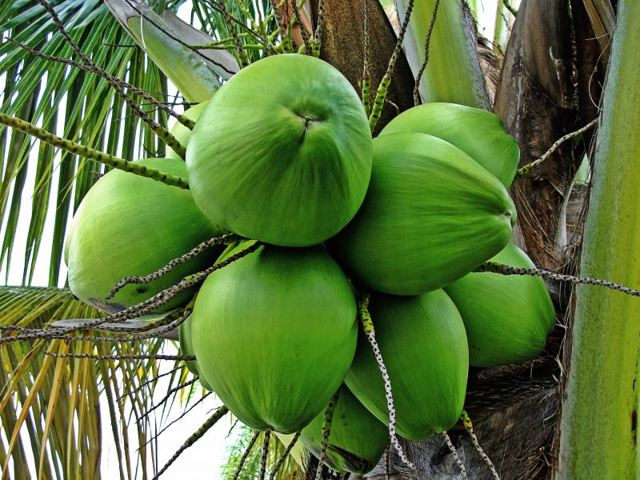
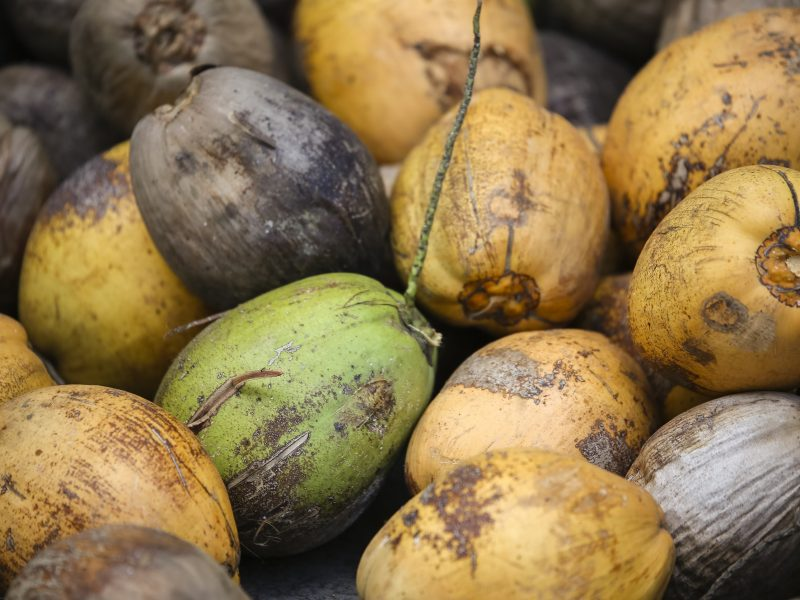
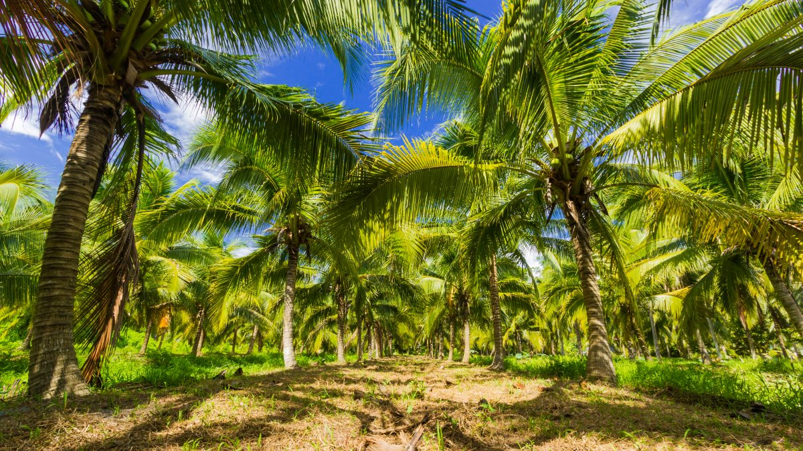
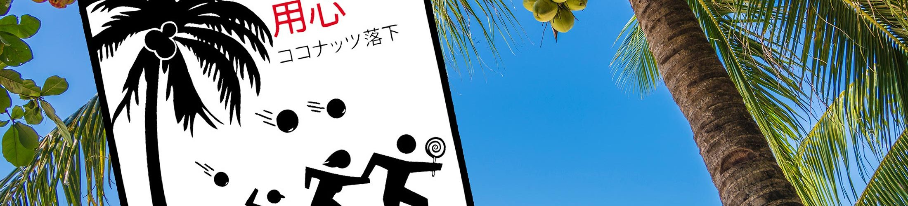
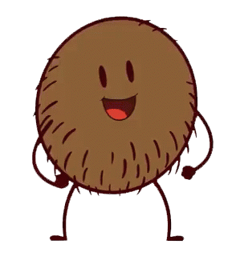
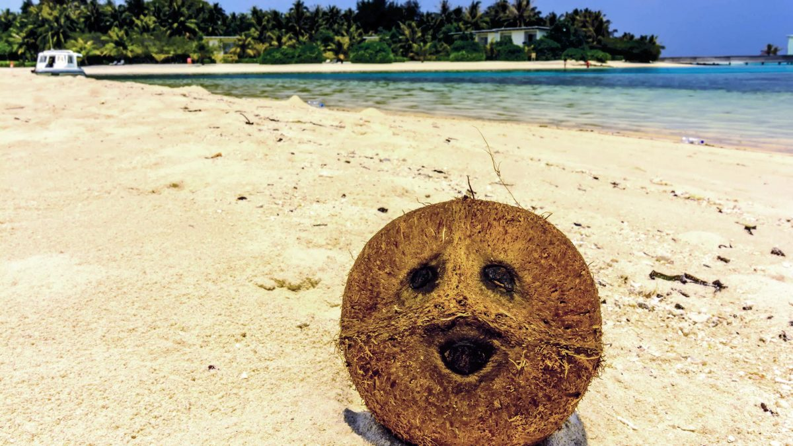

Palmier ou cocotier ?
Mais quelle est la différence entre un palmier et un cocotier ? Pas facile de s'y retrouver avec toutes ces plantes aux feuilles palmées.
Les palmiers, palmacées, Palmae, ou arécacées, Arecaceae, forment une famille de plantes monocotylédones qui peuvent mesurer jusqu’à 30 mètres de hauteur.Ce groupe comprend notamment les cocotiers (ou cocotier Nucifera). Le cocotier est donc une sorte de palmier. Mais comment distinguer un cocotier des autre palmiers ? Facile, grâce à son fruit: la noix de coco !
La récolte des noix de coco
Si la plupart des arbres fruitiers produisent leurs fruits à une saison spécifique, le cocotier offre des noix de coco toute l'année. Ainsi, en fonction de l'usage souhaité du fruit, c'est le stade de maturation de la noix qui déterminera le moment de la récolte.
Patienter avant de pouvoir récolter
Avant de voir apparaître les premières noix de coco sur un cocotier, il faut patienter 5 à 6 ans, après la plantation du jeune cocotier. Au début, le cocotier ne donne alors que quelques noix à la fois. Il faudra attendre une dizaine d’années pour voir des cocotiers porter d’importantes grappes de noix de coco, et produire à l’année une petite centaine de noix. Des noix qu’il produira toute sa vie, soit environ 80 ans.
" Il faut attendre près de 10 ans pour faire une bonne récolte de noix de coco. "
Le moment de la récolte
Afin de déterminer le moment de la récolte des noix, il faut considérer l’usage qui sera fait du fruit. La noix de coco a la particularité d’avoir une grande variété d’usages, qui implique des récoltes à des stades de maturité plus ou moins avancés.Ainsi, pour récolter l’eau de coco, les noix seront cueillies encore vertes. A ce stade, les noix sont recouvertes d’une enveloppe fibreuse importante, qui servira aussi pour la confection de tapis, ou de poils de balai par exemple.
Des techniques de récolte encore manuelles !
Pour cueillir les noix, il n’existe pas de solution robotisée et la récolte se fait encore à la main. Deux techniques sont majoritairement employées : la technique de la grimpe, ou la technique de la perche. La technique de la grimpe est sans doute la plus connue, car la plus « spectaculaire ». Il s’agit pour le cueilleur de grimper au cocotier, soit avec une machine, ou la plupart du temps avec un simple morceau de corde nouée à ses pieds. Arrivé à hauteur des fruits, il suffit alors de s’en saisir et de les faire tourner sur eux même jusqu’à les détacher. Cette technique particulièrement physique demande une bonne dose de savoir-faire.
La récolte au sol
L’autre technique, qui tend à se généraliser, notamment dans les plantations de cocotiers hybrides (plus petits que les « grands cocotiers »), consiste à utiliser depuis le sol, une grande perche dont l’extrémité est constituée d’une sorte de serpette. Il suffit alors de couper le fruit à sa base, et de savoir l’éviter lorsqu’il tombe ! Si les noix de coco ainsi récoltées peuvent être réfrigérées et stockées pendant près de 2 mois, la production de l’eau de coco notamment se fait dans les 48h, afin de conserver le maximum de fraîcheur au produit.
Des noix de coco tueuses… ou pas !
150. Ce serait le nombre des victimes de chutes de noix de coco par an. Une légende urbaine extrapolée d'une étude scientifique pour défendre les requins !
De l'étude scientifique...
En 1984, le docteur Peter Barss publie une étude dans la revue médicale « Journal of trauma » (journal des traumatismes), intitulée « Injury due to falling cononuts » (Blessures liées aux chutes de noix de coco).Cette étude réalisée en Papouasie-Nouvelle Guinée, révèle que 2,5% des patients admis à l’hôpital, y entrent pour blessures dues à une chute de noix de coco. Ainsi en l’espace de 4 ans, 4 personnes ont été touché au crâne, et 2 d’entre elles ont malheureusement perdu la vie, sur le coup. Fort de ce constat, flagrant, il extrapole dans son étude une estimation de 150 victimes annuelles à l’échelle mondiale. Cette étude, ô combien sérieuse, a même reçu le « IgNobel » en 2001 : une parodie du véritable prix nobel de médecine.
...à l'argument publicitaire pour une assurance voyage.
L’étude aurait pu rester confidentielle, si elle n’avait pas connu une certaine notoriété par l’intermédiaire de la compagnie d’assurance londonienne Club Direct. Celle-ci souhaitant promouvoir un package d’assurances pour les risques incongrus des voyages, affirmait que les noix de coco étaient plus dangereuses que les requins, en s’appuyant sur l’étude du Dr. Barss. L’annonce de Club Direct affirmant même qu’il fallait certes faire attention aux attaques de requins, mais qu’il était encore plus important de faire attention à ne pas s’assoir sous un cocotier. Les noix de coco seraient donc devenues de véritables tueuses, perpétrant 10 fois plus d’attaques que les requins ! Un argument tout trouvé pour Georges Burgess, spécialiste mondialement reconnu des requins, pour relativiser l’importance des attaques (de requins) sur les plages de Californie, pendant l’été 2001. Les médias, friands de ce type de comparaisons spectaculaires donneront alors à cette légende urbaine sa dimension internationale. Autant vous l’avouer, chez Vaïvaï, on a un peu l’impression que tout ça c’est des chiffres manipulés et extrapolés ! Mais si ça peut aider les requins à se refaire une réputation, tant mieux. D’autant que les noix de coco, elles, ne semblent pas en souffrir.
NOTE : A noter qu’à ce jour, aucune attaque de brique de Vaïvaï n’a été recensé !
Bacillus thurigiensis
En plus des nombreux services que l’« arbre de vie » rend traditionnellement à l’être humain, une scientifique péruvienne a découvert un usage inusité pour sa noix. Celle-ci sert de milieu de culture pour élever une bactérie qui tue les larves du moustique responsable de la propagation du paludisme. Cette bactérie (une des formes du Bacillus thurigiensis (Bt), qui est largement utilisé en agriculture biologique) constitue une solution de rechange écologique aux insecticides chimiques destinés à combattre le moustique et dont plusieurs se sont révélés dangereux pour le cheptel et les êtres humains.
" Bien que l’action insecticide de cette bactérie soit connue depuis longtemps, les coûts pour la multiplier étaient jusque là élevés, l’opération s’effectuant en laboratoire. "
Il fallait donc trouver le moyen de les réduire tout en proposant une technique simple, à la portée des villageois et des paysans. Après avoir tenté avec plus ou moins de succès de la multiplier en l’inoculant dans divers fruits locaux, on a découvert que l’eau de coco contenait les acides aminés et les hydrates de carbone dont elle avait besoin pour se reproduire, tandis que la coque protectrice fournissait un milieu favorable à son incubation. L’équipe de recherche a donc conçu une trousse d’incubation comprenant un sac de plastique rempli de cotons-tiges imprégnés de Bt ainsi que de l’ouate. Il suffit de percer la noix de coco, d’y insérer un coton-tige et de boucher l’ouverture avec l’ouate et d’attendre deux ou trois jours, après quoi la noix est cassée et son contenu vidé dans l’eau des étangs, où les larves du moustique se développent. Cette méthode peut être employée partout où pousse le cocotier, qui est justement abondant dans de nombreux pays où le paludisme fait des ravages.
Coco. Mon nom est coco…
Si certain écrits sanskrits mentionnent la noix de coco en 400 avant JC, les plus détaillés remontent à Marco Polo en 1280, lors de son voyage à Sumatra.
C’est l’italien Antonio Pigafetta qui en donne une description exacte en 1521. Chroniqueur de bord du Capitaine Magellan lors de son tour du monde, il est l’un des 18 survivants de cette expédition exceptionnelle. Dans son journal de bord, celui-ci dépeint avec minutie les peuples qu’ils rencontrent, leurs coutumes et leurs langues. Et notamment, comment les habitants des actuelles Phillipines et de Guam, consomment des « cocho / cochi » et s’enduisent entre autre le corps et les cheveux de son huile. Il qualifie d’ailleurs l’eau de coco comme « une eau claire et douce, au milieu de cette substance moelleuse [la chair de coco fraîche] qui est très rafraîchissante ».
Cela ne nous dis pas pourquoi cela s'appelle "Coco" ?
Chez Vaïvaï nous aimons croire à l’histoire selon laquelle le mot « Coco » viendrait des marins portugais constituant l’équipage de l’explorateur Vasco de Gama. Ce dernier fût en effet le premier à ramener les noix de coco, des Indes jusqu’en Europe, prêt de 10 ans avant le tour du monde de Magellan et 500 ans avant Vaïvaï ! Les noix de coco et leurs 3 « yeux », leur auraient rappelé un effrayant souvenir d’enfance. La tête grimaçante et effrayante de « Coco » ou « Cocâ », sorte de croquemitaine portugais invoqué pour faire obéir les enfants, sous peine d’être dévoré !